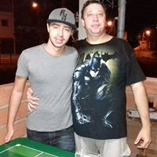
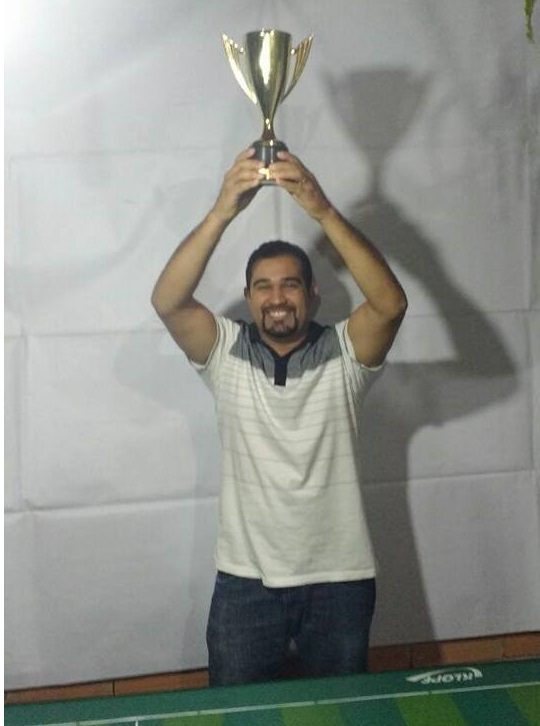
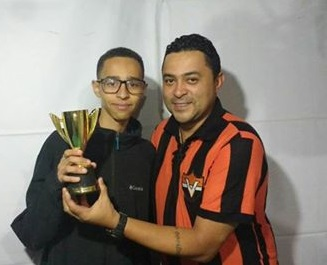
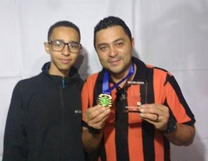

Copa União
No dia 05/08/17 tivemos o encerramento da Copa União, a copa foi uma grata novidade no calendário do Grêmio Vetor Norte nesse ano de 2017. Essa grata novidade foi patrocinada pelas equipes do Vasco (Tec. João Silverio) e Wizard (Tec. Erick Tiago).
Durante a disputa não faltou emoção, gols e lances geniais de todos os participantes.
Mais uma vez Baleares
A equipe do Baleares confirmou seu favoritismo e papou mais um título. Após campanha regular com bons jogos e um tropeço apenas, o time azul e amarelo, se classificou em primeiro lugar do grupo C.
Após um jogo muito parelho contra o Real Palestra na semifinal 1 a 1 no tempo normal, o Baleares se garantiu na final ao vencer nos pênaltis por 3x1.
Na final o Baleares enfrentou um estreante em finais e uma grata surpresa da copa união a equipe do Ventura Jr (tec. Raul). O placar final do duelo não mostra como foi o jogo pois durante a partida os nervos foram a flor da pele, após vinte minutos de pura emoção e ótimo futebol de mesa apresentado pelos competidores o placar ficou assim Ventura Jr 1x4 Baleares.
Baleares Campeão da Copa União 2017 !!!!
A primeira final do garoto prodígio
O técnico Raul Louzada, o mais jovem filiado ao Grêmio Vetor Norte, com uma campanha consistente garantiu o segundo melhor lugar geral da competição, que lhe proporcionou uma vaga na semifinal. Por ironia do destino seu duelo na semifinal foi contra um dos favoritos da competição a Soc. Ventura, além disso o técnico do esquadrão laranja e preto é seu pai (Gleison Ventura) , quem lhe ensinou o caminho e a paixão pelo esporte.
Se engana quem imaginaria um jogo de “compadre” pelo contrário, foi uma das partidas mais emocionantes da noite. No tempo normal a partida terminou 1 a 1 e nos pênaltis o garoto foi frio e eliminou o favorito por 4x3.
Em sua primeira final o jovem técnico bateu na trave, mas garantiu um honroso segundo lugar.
Parabéns Ventura Jr pela excelente campanha!!!!
Faltou o título
A Soc. Ventura do técnico (Gleison)fez uma campanha magistral, em especial na fase de grupos, onde a equipe obteve 100% de aproveitamento, após eliminação nos pênaltis na semifinal o esquadrão laranja e preto terminou como o único invicto na competição.
